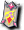

※各怪物的編輯請由標題的鉛筆圖示進行。掉落物品的編輯也可以從掉落物品欄的
１｜２｜３｜４｜５｜６｜７｜獎勵1｜獎勵2｜獎勵3
出現怪物
 斯特納（黃）
斯特納（黃）
| 斯特納（黃） | Lv | AC | MC | AAR | SAR | 掉落物品 |
| HP:55000～ | 110 | -45 | -5 | 20 | 40 | 帕爾塞斯寶珠、帕爾塞斯信仰寶珠、 斯坎達倫之神聖寶珠、 斯坎達倫之神聖寶珠、 斯坎達倫之護膝寶珠、斯坎達倫之武器寶珠、 斯坎達倫之護膝寶珠、斯坎達倫之武器寶珠、 斯坎達倫之護膝、圖爾鎧石、圖爾礦石、艾德鎧石、 斯坎達倫之護膝、圖爾鎧石、圖爾礦石、艾德鎧石、 艾德礦石、伽瑪板甲、貝塔板甲、[1次]各武器2階段升級捲軸 艾德礦石、伽瑪板甲、貝塔板甲、[1次]各武器2階段升級捲軸 |
| 善惡值 | 信仰值 | 金錢 | 攻擊屬性 | 防禦屬性 | ||
| 26 | 26 | 593 | 隨機 | 隨機 | ||
| STR | DEX | INT | WIS | CON | ||
| 81 | 21 | 21 | 21 | 81 |
10隻 守護目標
[斯特納]
| ［斯特納］ | Lv | AC | MC | AAR | SAR | 掉落物品 |
| HP:80000～ | 110 | -75 | 0 | 20 | 40 | 帕爾塞斯寶珠(中)、帕爾塞斯信仰寶珠、斯坎達倫之鎧甲寶珠、斯坎達倫之腰帶寶珠、斯坎達倫之戒指寶珠、 斯坎達倫之武服、 斯坎達倫之武服、 斯坎達倫之女法衣、 斯坎達倫之女法衣、 斯坎達倫之女緊身衣、 斯坎達倫之女緊身衣、 斯坎達倫之緊身衣、 斯坎達倫之緊身衣、 斯坎達倫之女板甲、固體炸彈、 斯坎達倫之女板甲、固體炸彈、 靈魂反射、帕爾塞斯的結晶 靈魂反射、帕爾塞斯的結晶 |
| 善惡值 | 信仰值 | 金錢 | 攻擊屬性 | 防禦屬性 | ||
| 50 | 50 | 783-848 | 隨機 | 隨機 | ||
| STR | DEX | INT | WIS | CON | ||
| 81 | 21 | 21 | 21 | 81 |
10隻 遠距離(神聖)
斯特納（紅）
| 斯特納（紅） | Lv | AC | MC | AAR | SAR | 掉落物品 |
| HP:83938 | 110 | -55 | -15 | 20 | 35 | 帕爾塞斯寶珠、帕爾塞斯信仰寶珠、斯坎達倫之神聖寶珠、斯坎達倫之耳環寶珠、 斯坎達倫之劍、斯坎達倫之魔杖、 斯坎達倫之劍、斯坎達倫之魔杖、 斯坎達倫之指虎、斯坎達倫之長槍、斯坎達倫之匕首 斯坎達倫之指虎、斯坎達倫之長槍、斯坎達倫之匕首 |
| 善惡值 | 信仰值 | 金錢 | 攻擊屬性 | 防禦屬性 | ||
| 32 | 32 | 697-724 | 隨機 | 隨機 | ||
| STR | DEX | INT | WIS | CON | ||
| 81 | 21 | 21 | 21 | 81 |
10隻
 安提拉加農砲（藍）
安提拉加農砲（藍）
| 安提拉加農砲（藍） | Lv | AC | MC | AAR | SAR | 掉落物品 |
| HP:60000～ | 110 | -50 | -15 | 20 | 35 | 帕爾塞斯寶珠、帕爾塞斯信仰寶珠、斯坎達倫之武器寶珠、斯坎達倫之耳環寶珠、斯坎達倫之護膝、 斯坎達倫之斧、斯坎達倫之魔杖、斯坎達倫之指虎、斯坎達倫之寶珠、斯坎達倫之匕首、斯坎達倫之卡組、斯坎達倫之長槍、 斯坎達倫之斧、斯坎達倫之魔杖、斯坎達倫之指虎、斯坎達倫之寶珠、斯坎達倫之匕首、斯坎達倫之卡組、斯坎達倫之長槍、 斯坎達倫之豎琴、 斯坎達倫之豎琴、 斯坎達倫之彎刀、黑暗力量洞、固體擊殺 斯坎達倫之彎刀、黑暗力量洞、固體擊殺 |
| 善惡值 | 信仰值 | 金錢 | 攻擊屬性 | 防禦屬性 | ||
| 42 | 42 | 622 | 隨機 | 隨機 | ||
| STR | DEX | INT | WIS | CON | ||
| 81 | 21 | 21 | 21 | 81 |
10隻
 ［安提拉加農砲］
［安提拉加農砲］
| [安提拉凱農] | Lv | AC | MC | AAR | SAR | 掉落物品 |
| HP:～90000 | 110 | -75 | 0 | 30 | 25 | 帕爾塞斯寶珠、帕爾塞斯信仰寶珠、帕爾塞斯的結晶、斯坎達倫之護膝寶珠、斯坎達倫之武器寶珠、斯坎達倫之護膝、斯坎達倫之劍、斯坎達倫之斧、斯坎達倫之指虎、斯坎達倫之匕首、斯坎達倫之寶珠、斯坎達倫之魔杖、斯坎達倫之卡組、  斯坎達倫之劍卡、斯坎達倫之豎琴、斯坎達倫之彎刀、野蠻重擊、靈魂反射、固體炸彈、固體擊殺、阿撒托斯、黑暗力量洞、波特拉姆魔像召喚、邪惡先鋒、安魂曲、專精、舒里 |
| 善惡值 | 信仰值 | 金錢 | 攻擊屬性 | 防禦屬性 | ||
| 62 | 62 | 842-912 | 隨機 | 隨機 | ||
| STR | DEX | INT | WIS | CON | ||
| 81 | 21 | 21 | 21 | 81 |
20隻
 蘭瑟亞
蘭瑟亞
| 蘭瑟亞 | Lv | AC | MC | AAR | SAR | 掉落物品 |
| HP:667405前後 | 120 | -75 | -30 | 20 | 50 |  斯坎達倫之戒指、斯坎達倫之女板甲、斯坎達倫之指虎、斯坎達倫之護膝、斯坎達倫之武服、 斯坎達倫之戒指、斯坎達倫之女板甲、斯坎達倫之指虎、斯坎達倫之護膝、斯坎達倫之武服、 斯坎達倫之耳環、帕爾塞斯護膝 斯坎達倫之耳環、帕爾塞斯護膝 |
| 善惡值 | 信仰值 | 金錢 | 攻擊屬性 | 防禦屬性 | ||
| 2000 | 2000 | - | 隨機 | 隨機 | ||
| STR | DEX | INT | WIS | CON | ||
| 81 | 121 | 61 | 71 | 81 |
備註 BOSS怪物
留言
- &#
- 打倒了約10隻蘭賽亞，但沒有掉寶珠。怎麼回事呢？ -- sa? 2008-03-10 (一) 07:06:33
- Re:↑ 感覺很久以前開始，就算打倒首領也不算打倒，只是HP變成0的狀態。我想回報給Nexon，但到現在都還沒送出去… -- ｈ? 2009-08-12 (三) 12:51:12
- 1次首領似乎有很多動作不穩定的地方，例如HP變0後也不會倒下而是殭屍化無法擊倒，或是首領卡在地圖的構造物中完全無法出手。即使打倒了也不會掉落寶珠。 -- 2009-08-14 (五) 02:05:21
- 確認一下，蘭賽亞掉落的斯坎達倫戒指不能附魔對吧？ -- ｈ? 2011-02-06 (日) 13:47:15
掉落備忘
斯坎達倫之護膝(@1)、彎刀2階段上升捲軸